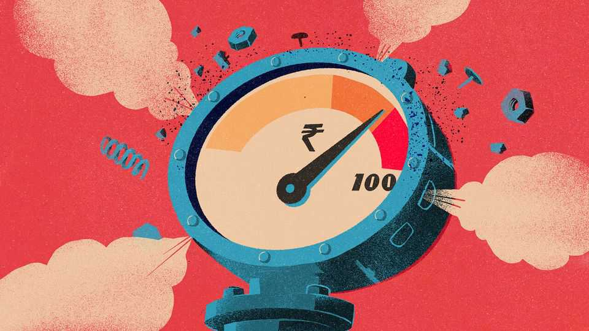

India has stabilised its currency. But at what cost?
The central bank is using ever harsher measures to keep the rupee below 100 to the dollar

Oct 29th 2026
THE RUPEE is back, baby! And all it took was some gentle management by the Reserve Bank of India (RBI). Over the past few months the central bank has, among other things, wooed dollar deposits from overseas Indians with juicy interest rates and currency guarantees; spent tens of billions of dollars to buy rupees in the open market; severely limited the ability of investors to speculate on the currency; and, on October 10th, imposed punitive costs on businesses that legitimately need to hedge their own foreign-currency exposure. As a result, the rupee recovered for a while from just under 97 to the dollar to just under 95. Break out the party hats.
Or perhaps not. “Just under 95”, as a close-of-day price, is the level the rupee hit in late March. So unacceptable was the idea that India’s beloved currency might cross that threshold that the RBI imposed a set of measures described by one analyst as rolling back a decade of market liberalisation in just a few days. The intervention brought some relief. But the currency crossed 95 within weeks, marching ever onwards towards the big “100” flashing like a neon sign in front of traders’ eyes. Ajay Shah, an economist, describes this dynamic as “the recurring round-number skirmish”. Few numbers are rounder than a century.
Ever since independence and even more so since a balance-of-payments crisis in 1991, any steep fall in the value of the rupee has been seen as a national humiliation. In 2013 Narendra Modi, then chief minister of the state of Gujarat, cannily used its sharp depreciation to paint the Congress-led government of the day as corrupt and incompetent. For Mr Modi to preside over the rupee’s slide into triple digits now would be rather embarrassing. It would also provide the opposition with a delicious attack line just months before elections in Uttar Pradesh, a bellwether state of 240m people. The words “hoist” and “petard” come to mind.
The RBI is, of course, an independent, inflation-targeting central bank. It aims for no specific exchange rate, it says. Its measures are designed only “to ensure orderly functioning of the foreign-exchange market”, it stresses. Yet its actions argue otherwise. The problem is that “a failed defence is worse than no defence”, as Duvvuri Subbarao, a former governor of the bank, has noted. If the bank folds easily, markets may start to believe they can push it around and pile yet more pressure on the rupee.
And…so what? A currency is worth whatever people are willing to pay for it. That is determined by forces outside the central bank’s control. In recent years global capital has been lured away because of AI investments abroad, rising interest rates in America and overvalued markets in India, lowering demand for the rupee. It has not helped that energy prices have shot up since March after someone started another needless war in the Middle East, boosting India’s demand for dollars. As long as these conditions persist, the rupee will weaken.
The costs of the RBI’s defence are escalating. India’s foreign-exchange reserves fell by some $50bn in September alone as the central bank sold dollars to buy rupees. And bets on the currency are moving from financial markets into the real economy. Exporters anticipating further depreciation will delay bringing cash back to India. Importers will fill their warehouses. Members of India’s diaspora, who sent home $144bn or about 3% of GDP last financial year, may delay remittances. Resident Indians will buy even more gold than they usually do.
Another cost is that limiting hedging—along with unpredictable policymaking followed by clarifications and reversals—could discourage the capital inflows that would help bolster the rupee. The biggest cost, though, is to the credibility of the RBI, which risks looking as if it is fighting a political battle. Traders now believe 97 is its red line to prevent a collapse to 100. But there is no good reason to defend that number.
The RBI has, for now, arrested the currency’s decline. The rupee appreciated by 1% on the first trading day after the latest announcements and has since remained stable. It even enjoyed a little boost thanks to foreign demand for shares in India’s biggest-ever IPO on October 21st. And, who knows, India may get lucky. A devastating defeat for the Republicans in America’s midterms could weaken the dollar. The AI bubble could burst. The Iran war could end and the Strait of Hormuz could reopen. All sorts of things could happen. Until they do, the costs of defending a round number will mount ever higher. ■